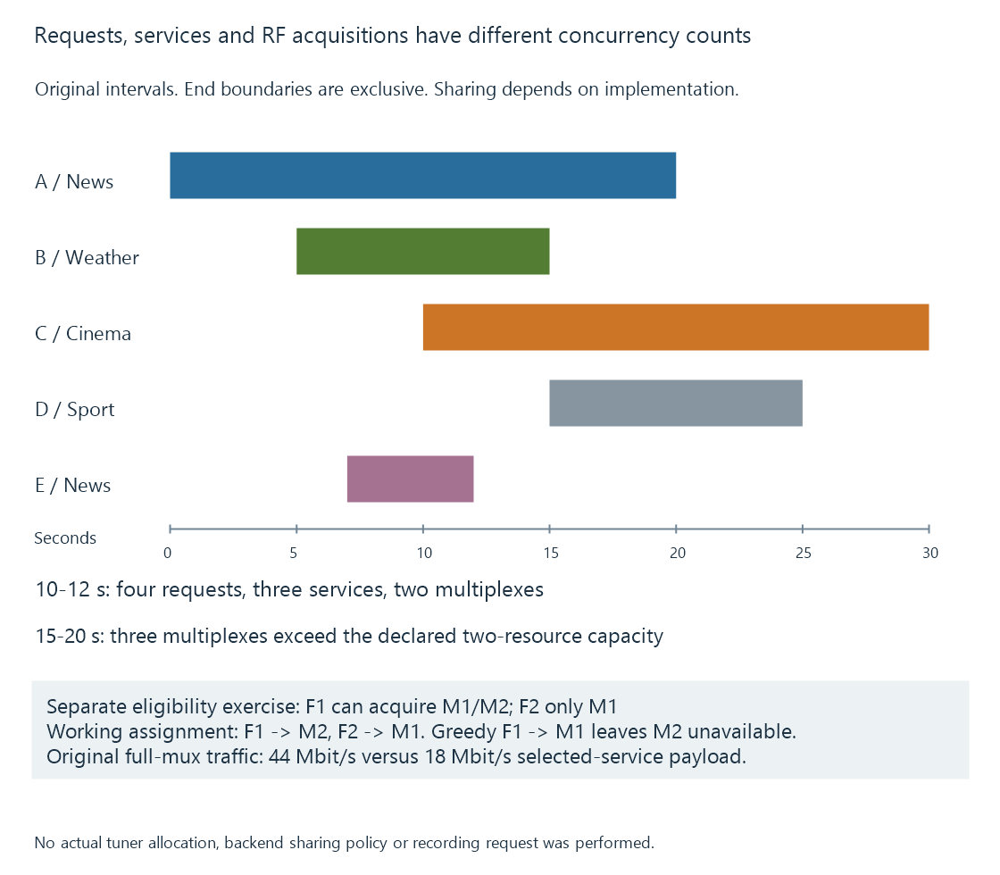

Tuner concurrency and shared acquisition
Tuner concurrency depends on simultaneous compatible acquisitions and the implemented sharing policy, which can differ from the count of viewers, recordings or services.
A tuner count describes acquisition resources, not automatically the number of clients that can watch television. Several clients can use one acquired source only if the route implements the relevant sharing.
Different programmes on the same RF multiplex add another question: does the source/backend expose the whole multiplex or only independently acquired programme streams?
Three policies have different resource keys
| Declared policy | One acquisition is keyed by |
|---|---|
| Independent request | Each viewer/recording request |
| Shared same service | A compatible service/source combination |
| Shared full multiplex | A compatible RF/multiplex acquisition supplying the required services |
Same-service sharing and full-multiplex sharing are different capabilities. A backend able to redistribute one programme to several clients does not thereby supply different programmes from the same carrier through one acquisition.
The full key can include input route and physical-layer configuration. Matching only a frequency label is not always sufficient.
Five original requests
Use this invented request set, with times measured in seconds from a common origin:
| Request | Use | Service | Multiplex | Interval |
|---|---|---|---|---|
| A | Viewer | News | M1 | [0,20) |
| B | Recording | Weather | M1 | [5,15) |
| C | Viewer | Cinema | M2 | [10,30) |
| D | Recording | Sport | M3 | [15,25) |
| E | Another viewer | News | M1 | [7,12) |
Intervals are half-open: a use ending at fifteen does not overlap a use starting at fifteen merely because their boundary is equal.
The labels do not represent real broadcasts, user timers or Emby API data.
The peak depends on what can actually share
Between ten and twelve seconds, A, B, C and E are active:
- Four requests.
- Three distinct services: News, Weather and Cinema.
- Two distinct multiplexes: M1 and M2.
Under full-multiplex sharing, two suitable acquisition resources can supply that interval. Under same-service sharing, three are required. Under independent acquisition, four are required.

At fifteen seconds, B has ended and D has started. A, C and D now require M1, M2 and M3. Even the ideal full-multiplex policy needs three acquisition resources then.
Across the complete exercise, the peaks are four requests, three service acquisitions and three multiplex acquisitions.
A two-resource model still has a conflict
Assume two compatible resources and the declared full-multiplex policy. Demand is:
| Interval | Required multiplex acquisitions |
|---|---|
| [0,5) | 1 |
| [5,7) | 1 |
| [7,10) | 1 |
| [10,12) | 2 |
| [12,15) | 2 |
| [15,20) | 3 |
| [20,25) | 2 |
| [25,30) | 1 |
The conflict is fifteen through twenty seconds. If D waits until twenty, it can acquire M3 when A releases M1, but its first five requested seconds have not been captured by that delayed route.
A policy that rejects, delays or interrupts a request must choose which consequence is intended. Resource arithmetic does not decide that priority.
Actual recording rules, padding and other source consumers can change the intervals. This model isolates acquisition demand rather than claiming a real scheduler result.
A shared source stays live while any use remains
A and E share News under the same-service policy. E ending at twelve does not release the acquisition while A still needs it through twenty.
For a full-multiplex route, B also uses M1 until fifteen. Resource release must consider every remaining dependent service/use.
This is why the ownership lifetime matters alongside the count. Releasing the acquisition on the first client disconnect can stop another client; retaining it after the last dependent use can leave a resource unnecessarily occupied.
Backend adapters develops the interface/lifetime boundary.
RF sharing can increase other work
Suppose an original full-multiplex output uses twenty Mbit/s for M1 and twenty-four for M2. The two-acquisition interval then brings forty-four Mbit/s to the server.
If the selected programme payloads are News six, Weather two and Cinema ten Mbit/s, their combined service payload is eighteen.
The full-multiplex route uses fewer RF acquisitions under the stated assumptions while carrying more incoming data. Selection/filtering location and network capacity therefore remain separate considerations.
Neither rate includes transport overhead, and neither describes a measured tuner.
A compatible assignment is another condition
A free-resource count can be sufficient numerically while a careless assignment still fails.
For a separate original two-resource exercise:
| Resource | Eligible modeled acquisitions |
|---|---|
| F1 | M1 or M2 |
| F2 | M1 |
The required acquisitions are M1 and M2. Assigning M1 to F1 first leaves F2 unable to acquire M2.
A valid assignment instead places M2 on F1 and M1 on F2. Both demands then have distinct compatible resources.
{
"resources": [
{"id": "F1", "eligible": ["M1", "M2"]},
{"id": "F2", "eligible": ["M1"]}
],
"required": ["M1", "M2"],
"assignment": {"F1": "M2", "F2": "M1"}
}
The object is a teaching matching model, not native capabilities or a tuner-allocation report. Eligibility can represent supported input/configuration differences in a real route.
This separate example does not change the five-request model’s assumption that its resources are otherwise compatible. It adds the reason that counting alone cannot choose a working assignment.
The implementation establishes the policy
A vendor’s direct stream interface, its record engine and a separate backend can expose different sharing behavior. SiliconDust’s record-engine API, for example, documents automatic tuner sharing for its defined live-TV route; that statement should not be generalized to every direct source request or every Emby backend.
The relevant question is which source operation is opened and how its data is redistributed. A shared channel name or two requests beginning at the same time is not proof of shared acquisition.
Finally, all counted resources must support the requested delivery system and input arrangement. An occupied tuner, an incompatible frontend or a mutually exclusive shared satellite input can reduce the available pool before client conversion capacity is considered.
See Also
- Broadcast multiplexes
- Network TV tuners
- IPTV connection limits
- Concurrent encoder sessions, policy and capacity